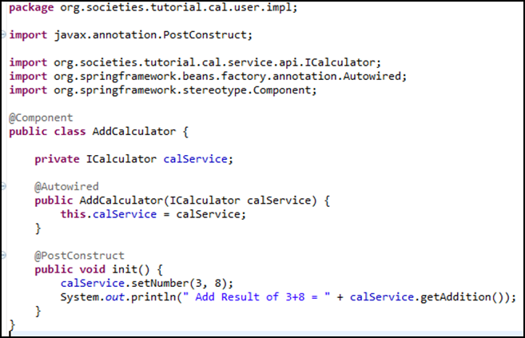
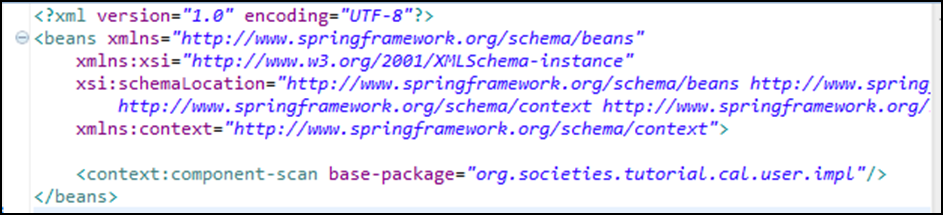
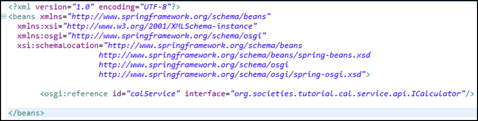

Creating a "Service Consuming" Project
Create the project using same approach described in Section 2.4.1 and modify your pom to import the required packages and dependencies. Create your "service consuming" class by importing the service exposed API (see Figure 22 for an example).

Importing Spring annotations simply means add the following imports:
import org.springframework.beans.factory.annotation.Autowired;
import org.springframework.stereotype.Component;
Then add the @Component annotation to the class and the @Autowired annotation either to the property that will reference the required service or to the constructor taking the parameter of the same type of the service interface (as seen in figure above).
Edit the module-context.xml file to scan the packages which needs autowiring (figure below):< br />

Edit the bundle-context-osgi.xml file to fetch the service that implements the required interface (figure below):

Build your project and start Virgo: check the log file in VIRGO_HOME\ serviceability\logs for the log output of the example service - if you followed the tutorial code - or from your specific service.